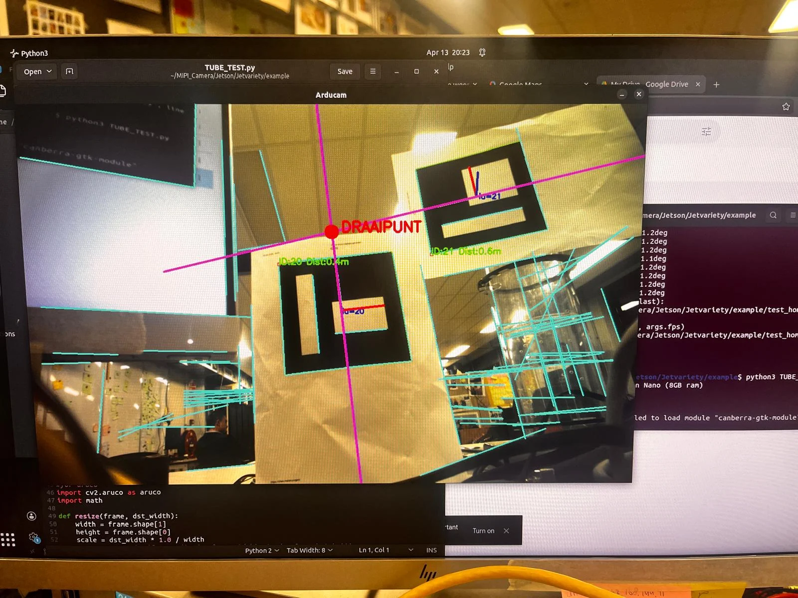
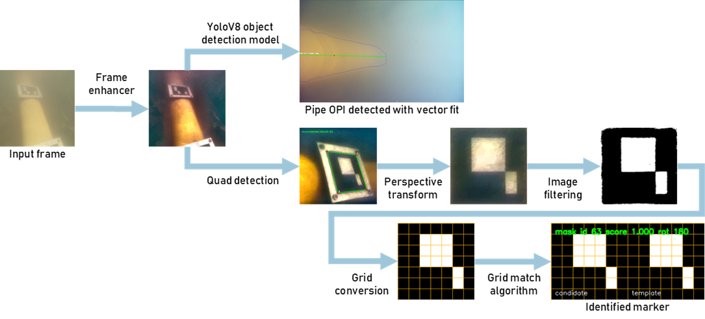

QUEST / HU ROBOSUB / 2026
Een onderwaterrobot
helpen waarnemen.
Camera’s en sensoren leveren pas waarde als hun gegevens bruikbaar worden. Binnen HU RoboSub werkte ik aan die verbinding voor onderwaterrobot Aurora.

01 / DE UITDAGING
De uitdaging
Onder water veranderen kleuren en zorgen reflecties voor lastige camerabeelden. Tegelijk heeft een robot gegevens over zijn beweging nodig om te kunnen navigeren. Voor de competitie in Noorwegen werkte het team aan de herkenning van gele buizen en ArUco-markers: vierkante herkenningspatronen met een eigen nummer.
02 / MIJN BIJDRAGE
Mijn bijdrage
Ik configureerde de Arducam-camera op de NVIDIA Jetson en werkte aan de live videostream naar QGroundControl op de afstandsbediening.
Met OpenCV werkte ik aan het herkennen van ArUco-markers onder water. Daarnaast testte ik beeldverwerking bij verschillende lichtomstandigheden en verzamelde ik onderwaterbeelden voor buisherkenning.
Ik werkte aan de DVL-koppeling: van de fysieke aansluiting en Python-software tot gegevensoverdracht via ROS 2 en DDS naar de PX4-besturing. Daarbij bouwde ik voort op het werk van eerdere teamleden.
03 / HET RESULTAAT
Het resultaat
ArUco-markers werden onder water herkend, de live camerastream werd beschikbaar op de controller en DVL-meetgegevens bereikten de PX4. In tests in de waterbak konden we deze gegevensoverdracht controleren. Deze verbindingen vormen bouwstenen voor de verdere ontwikkeling van autonome functies.

04 / VERDIEPING
Voor wie de techniek in wil
Camera → controller
Arducam AR0234 → NVIDIA Jetson → GStreamer / UDP → QGroundControl. Beeldconversie en rotatie maakten de camerabeelden bruikbaar voor de operator.
DVL → besturing
DVL → Ethernet → Python / ROS 2 → Micro-XRCE-DDS → PX4. De DVL meet de bewegingssnelheid met geluid; de koppeling maakt deze meetgegevens beschikbaar voor de besturing.
Beeldherkenning
OpenCV voor ArUco-detectie. Voor gele buizen onderzocht ik onder andere kleur- en lijnherkenning. Wesse werkte het getrainde YOLO-model verder uit met verzamelde beelden; reflecties bleven een aandachtspunt.

Wat ik meeneem
Ik leerde dat een algoritme op zichzelf nog geen werkend robotsysteem is. Drivers, bekabeling, berichten en testomstandigheden moeten ook op elkaar aansluiten. Samenwerken en het documenteren van die verbindingen waren net zo belangrijk als de code.
Wil je meer weten over mijn projecten of praten over een afstudeeropdracht? Stuur me een bericht via LinkedIn.
Neem contact op ↗